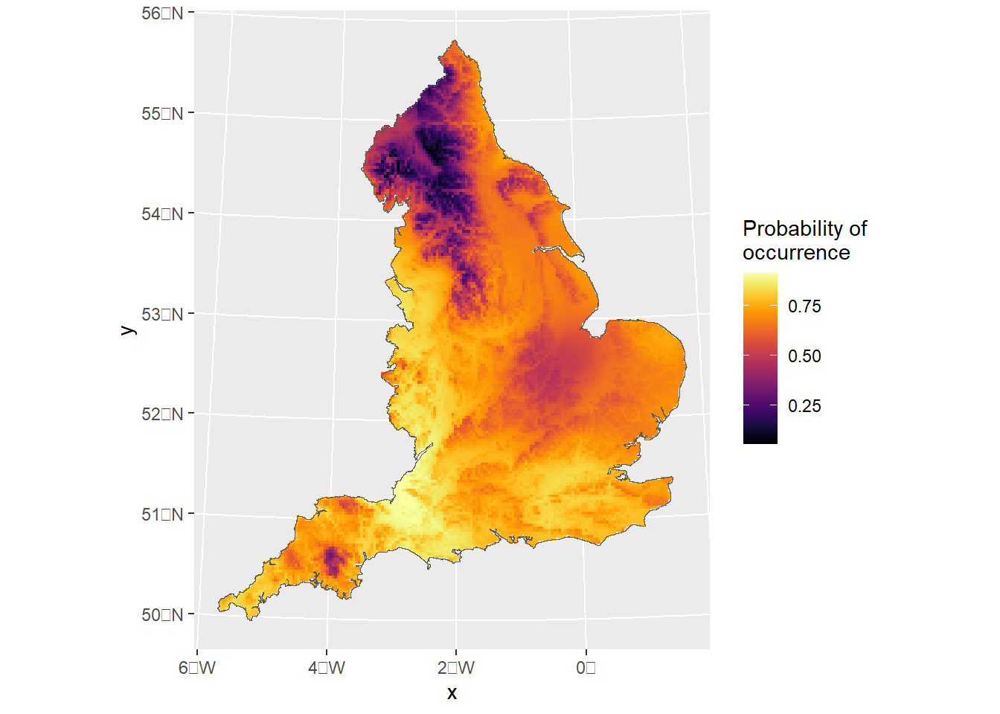
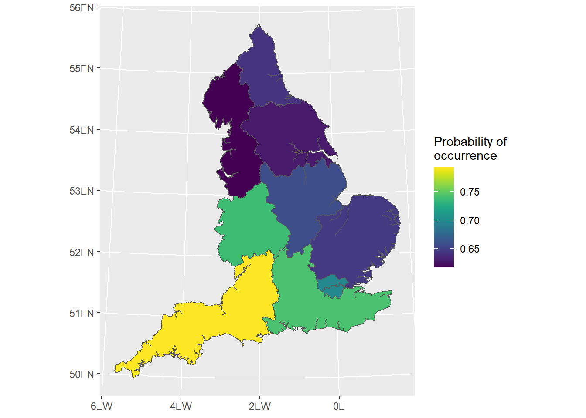

Ecological studies usually involve the analysis of data that are geographically referenced. Over the last decade, different packages have been developed to handle geographic data in R with the sp package (now not longer supported) being for many years one of the key geospatial R packages for handling spatial data. However, new technologies have shown an important increase in the accuracy of georeferencing, leading to a more precise coordinate representation. In consequence, the code in which coordinate reference systems (CRS) are written has been updated. To have a better understanding of what these changes are and a bit of the history behind, I recommend the following reading:
In summary, recent changes in GDAL and PROJ packages (and in consequence any package that depended on these ones) do not longer support using proj4strings to represent a CRS because it cannot hold all the details of a projection. Intead, the current approach to represent a CRS is with the WKT2 strings, a standardized text-based format developed by the Open Geospatial Consortium (OGC). However, coding the WKT2 manually can be difficult due to the complexity involved in the CRS specification. A common aproach to address this is to specify the EPSG code (European Petroleum Survey Group) which is a uniform mapping system that identifies each coordinate refence system and projections. As a consequence of all of these changes, the OGC developed the sf package as standardized way to encode spatial data that has replaced the sp and rgeos packages. The sf has gained a lot of support and different resources and tutorials have become available. Here are some tutorials you might find useful to get you started with the sf library.
Pebesma, E.; Bivand, R. (2023). Spatial Data Science: With Applications in R (1st ed.). 314 pages. Chapman and Hall/CRC. https://doi.org/10.1201/9780429459016 https://r-spatial.org/book/
The sf package provides a more convenient and flexible framework for handling spatial data by defining more intuitive spatial data-structures compared to sp. In the next sections I will go throught some examples for handling spatial objects, CRS and projections using sf and their implementation with inlabru.
1 Accessing and manipulating spatial data
First, we will begin by downloading some data from the geodata R package. This package contains a variety functions for downloading geographic data (e.g. climate, elevation, soil, crop, species occurrence, and administrative boundaries) for spatial analysis and mapping. We begin by downloading the two following data sets:
UK boundary as a SpatVector class of object.
UK Elevation raster layer as a SpatRaster class of object.
Both data sets are defined by a spatial class of objects in terra, an R package (which substitutes the older raster library) that facilitates access, manipulation and visualization of points, lines, polygons and raster (grid) data.
Now can do some spatial manipulation for some of these data sets, e.g. lets subset only the area corresponding to England. We can load the tidyterra package to manipulate terra defined objects, this has a nice integration with tidyverse . Converting a SpatVector class of object to a sf obejct is quite straightforwards. This allows us to easily set an appropriate CRS, e.g. based on the EPSG code:
Now lets load some occurrence data an set everything on the correct CRS. First we load the presence-absence records for the speckled wood butterfly (Pararge aegeria) and convert this to an sf class object while assigning the correct crs.
We know that these data are already in the nothings and eastings. However, your data might be in longitude and latitude coordinates. Thus, you can set the original crs when converting it to an sf class and the use the st_stranform to transform it to a different CRS.
If everything is fine you should be able to overlay the different layers in a single plot. Both sf and tidyterra integrates easily with ggplot2. So we can call geom_sf and geom_spatraster to add a layer to our base ggplot:
INLA offers a computationally efficient framework to make accurate Bayesian inference for the class of latent Gaussian models. A LGM is a hierarchical Bayesian model of the form:
\(\mathbf{x}\) is the latent Gaussian field (i.e., the joint distribution of all parameters in the linear predictor) with precision matrix \(\mathbf{Q}^{-1}\) that depends on hyper parameters \(\theta\).The element of each linear \(\eta_i(\textbf{x})\) is linked to the latent field via a linear map defined by sparse design matrix \(\textbf{A}\), i.e. \(\eta_i(\mathbf{x}) = \mathbf{A}_i\mathbf{x}\) is the additive predictor for observation \(y_i\). The parameter of interest in the likelihood function of our response data with density \(\pi(y_i|\eta_i(\mathbf{x}),\theta)\), can be linked to the linear predictor via a link function \(g^{-1}(\cdot)\).
Note
The linear predictor can include a variety of random effects such as smooth terms or spatiotemporal components by incorporating Gaussian random fields (GRFs) into models. This is achieved by using the stochastic partial differential equation (SPDE) method introduced by (Lindgren, Rue, and Lindström 2011) within the R-INLA package. The SPDE approach offers a computationally efficient way to approximate the Mat’{e}rn process using a GMRF. It uses the fact that the Mat’{e}rn field is a solution to a particular SPDE. The solution is then approximated using a finite combination of piecewise linear basis functions defined on a triangulation. The main result and strength of the approach is that the solution is completely defined by a Gaussian vector of weights (defined on the triangulation vertices) with zero mean and a sparse precision matrix. This sparsity gives the great computational benefits of the SPDE approach .
INLA has gained popularity among applied statisticians and scientists not only because of its ongoing developments and improved numerical stability and scalability but also for the flexibility to fit widely-used statistical models such as generalized linear mixed models (GLMM), generalized additive mixed models (GAMM) and spatial and spatio-temporal models.
inlabru provides a simplified interface for fitting complex spatial and spatiotemporal models using INLA. It facilitates model fitting and prediction, while extending some of INLA capabilities (e.g., by fitting models with non-linear components), and integrates well with other widely-used packages for spatial data manipulation and visualization such as sf and terra.
2.1 Logistic regression example
We will fit a logistic regression to the speckled wood occurrence data to illustrate a straight forward implementation of a spatial model using spatial covariates. The model likelihood is given by:
\[
y_i \sim \mathrm{Bernoulli}(\psi_i)
\]
Where the probability of presence \(\psi\) is defined as a logit-scaled linear predictor \(\eta\):
Here, \(\omega\) can be defined as a i.i.d site-level random effects or as a continuous Gaussian spatial field with Matérn covariance. We can easily evaluate the elevation values at the locations where observations were made.
One option is to extract the raster values at target sf object coordinates and add this data to the input data frame.
library(inlabru)library(INLA)cmp_model1<-~-1+Intercept(1,mean.linear=0, prec.linear=1)+elev(GBR_elv_msk, model ="linear",mean.linear=0, prec.linear=1)+site_raneff(ID, model ="iid")lik_model1<-like("binomial", formula =y~., data =occurrences_sf, Ntrials =1, control.family =list(link ="logit"))model_1<-bru(cmp_model1 , lik_model1)
mean
sd
0.025quant
0.975quant
mode
0.869
0.089
0.694
1.043
0.869
−0.363
0.117
−0.593
−0.134
−0.363
While appending the covariate values to the input data is straightforward, there is an even more convenient way in inlabru. But first, lets fit a explicit spatial model. To do so we will look at the new fmesher library to help us build the mesh.
3fmesher and Spatial models
The SPDE approach relies discretizing the space by defining a mesh that creates an artificial set of neighbours over the study area that allows for the spatial autocorrelation between observation to be calculated. How the mesh is constructed will have an important impact on the inference and predictions we make. Thus it is important to create a good mesh to ensure results are not sensible to the mesh itself. While the mesh construction vary from case to case, there have been some guidelines to create an optimal mesh. There are several arguments that can be used to build the mesh. This vignette will only cover a two-dimensional mesh construction using the fm_mesh_2d_inla function. However, a one-dimensional mesh specification can be created using the fm_mesh_1d function. The arguments for a two-dimensional mesh construction are the followings:
First, some reference about the study region is needed, which can be provided by either:
the location of points, supplied on the loc argument.
the domain extent which can be supplied as a single polygon on the loc.domain argument.
A boundary of the region defined by a set of polygons (e.g a polygon defining the coastline of the study) supplied on the boundary argument.
Note
Note that if either (1) the location of points or (2) the domain extent are specified, the mesh will be constructed based on a convex hull (a polygon of triangles out of the domain area). Alternatively, it possible to include a non-convex hull as a boundary in the mesh construction instead of the location or loc.domain arguments. This will result in the triangulation to be constrained by the boundary. A non-convex hull mesh can also be created by building a boundary for the points using the fm_nonconvex_hull_inla() function.
The other compulsory argument that needs to be specified is the max.edge which determines the largest allowed triangle length (the lower the value for max.edge the higher the resolution). The value supplied to this argument can be either a scalar, in which case the value controls the triangle edge lengths in the inner domain, or a length two vector that controls the edge lengths in the inner domain and in the outer extension respectively. Notice that the value (or values) passed to the max.edge function must be on the same scale unit as the coordinates. See the Mesh construction tab for further reference and guidelines.
3.1 Building a mesh with fmesher
If we don’t have a good prior understanding of what our spatial range might be, we can initially approximate it with 1/3 of the study range. Then, we create the value max_edge, which could be between 1/10 and 1/5 of this value. The max.edge is max_edge for the inner mesh, and 5\(\times\) max_edge for the outer mesh. The cutoff is max_edge/5. The offset is max_edge for the inner boundary, and 5\(\times\) max_edge for the outer boundary. In the next example I illustrate how the mesh can be created using a non-convex hull or using the England sf boundary we defined earlier.
Spatial covariates can also be provided directly via the input expressions as long as if they are supported by eval_spatial() and the input data is and sf object. eval_spatial allow us to evaluate spatial covariates from different classes such as SpatRaster, starts and sf. When provided, inlabru automatically evaluates the covariate at the data locations (and also interpolates; see point process modelling):
components = y ~ cov_x(eval_spatial(myRaster, where = .data.), model = "linear")
Another component that we would like to incorporate is the SPDE model. We specify the SPDE spatial model using PC priors (more details on this will be added lately).
inlabru automatically creates the projection matrix \(\mathbf{A}\) to map the SPDE values at the mesh vertices to the values at the data locations. In sf, the coordinates information is contained in the geometry column:
occurrences_sf$geometry
Geometry set for 627 features
Geometry type: POINT
Dimension: XY
Bounding box: xmin: 138.9365 ymin: 25.07044 xmax: 649.8716 ymax: 634.0002
Projected CRS: +proj=tmerc +lat_0=49 +lon_0=-2 +k=0.9996012717 +x_0=400000 +y_0=-100000 +ellps=airy +units=km +no_defs
First 5 geometries:
POINT (398.9019 610.003)
POINT (408.9006 634.0002)
POINT (423.8988 604.0038)
POINT (304.9141 516.0138)
POINT (307.9137 538.0112)
So for sf data, ‘geometry’ data column has all the information, and is properly supported by the eval_spatial() and fm_evaluator() methods that are used to map between covariates-locations and locations-mesh basis functions.
components = y ~ field(geometry, model = inla.spde2.matern(...))
Note
Since the CRS information is part of the geometry column of the sf object, this retains CRS information, so this is more robust, and allows the model to be built on a different CRS than the observation data.
Note that “geometry” label isn’t a keyword for inlabru, it is just the default name of the st_geometry column of sf objects. Thus, taking this into account, we can fit an spatially explicit model as follows:
cmp_model2<-~-1+Intercept(1,mean.linear=0, prec.linear=1)+field(geometry, model =spde)+elev(eval_spatial(elevation_England, where =.data.), model ="linear",mean.linear=0, prec.linear=1)lik_model2<-like("binomial", formula =y~., data =occurrences_sf, Ntrials =1, control.family =list(link ="logit"), domain =list(geometry =mesh_1))fit_model2<-bru(cmp_model2 , lik_model2)
Note
Note that we also specified the geometry name on the domain list that is used to project the integration points to the vertices of the mesh.
mean
sd
0.025quant
0.975quant
mode
0.734
0.451
−0.366
1.531
0.807
−0.444
0.146
−0.732
−0.158
−0.442
5 Predictions
Commonly we want to predict the spatial field or the linear predictor at a grid of locations. In previous versions, users had to supply a SpatialPixels or SpatialPixelsDataframe (an sp spatial class object ) covering the mesh to do the predictions. inlabru detected the SpatialPixels and convert it to a SpatialPointsDataFrame , then ran generate to produce samples that were recovered as a SpatialPixelsDataFrame. Unfortunately, sf doesn’t have grid-class defined objects. In fmesher, the fm_pixels() can be used to generate lattice points covering a mesh (it can generate a sf, SpatRaster, or SpatialPixelsDataFrame covering the mesh or a mask). However, fm_pixels will return points organised on a lattice, but not an actual lattice object. So if you want to apply proper plotting methods you need to convert the evaluated data into a lattice, i.e. we want to go from pointwise sf data to a terra::rast() object so that predict handles terra data in a similar way to how it handles SpatialGridDataFrame input/output. Unfortunately, terra isn’t supported by predict yet. Thus, for the moment being we would need to use as input either a SpatialPointsDataFrame or a sf object.
First, we will generate a sf “lattice” locations covering the mesh_0 based on a non-convex hull. Recall that this mesh had no CRS assigned to it, so the mask aregument in fm_pixels won’t work:
#dims=c(300, 300)pred.df<-fm_pixels(mesh_0,dims =dims,mask =England_border_mainland, format ="sf")
Error in st_geos_binop("within", x, y, sparse = sparse, prepared = prepared, : st_crs(x) == st_crs(y) is not TRUE
To circumvent this we could either (i) assign the proper CRS when we create the mesh object or (ii) assign the CRS to the fm_pixels output and then masked it according to the boundary of interest as follows:
pred.df<-fm_pixels(mesh_0,dims =dims, format ="sf")st_crs(pred.df)<-st_crs(England_border_mainland)pred.df<-pred.df[England_border_mainland,]
Then we can use the predict function and plot the prediction as follows:
pred<-predict(fit_model2,pred.df,formula~data.frame( spde =field, eta =plogis(Intercept+elev+field)))ggplot()+gg(pred$eta, geom ="tile")+geom_sf(data=England_border_mainland,alpha=0)+scale_fill_viridis(option="B",name="Probability of \noccurrence")

Note
Note that when the mask argument is passed on to fm_pixels, the function will create a “grid” based on the dimension given. If mask = TRUE then it will find out which points are inside a mesh and exclude any other points outside of it. Otherwise, if an sf object is supplied, st_within will ran internally to identity the points(“grids”) that are within the mask. Unfortunately, this can be computationally expensive, so I would only use this to produce final maps. For an initial inspection the first approach should work just fine.
In here we use the mask that contains the CRS to compute the pseudo-grid for prediction:
For plotting we have used inlabru generic plotting gg function. In the examples above we have plotted the mean of the linear predictor only. However, what if we wanted to show for exampled the std. dev? recall that the output from predict is an sf object and that sf do not support grid-class object. As a result, we can not use standard geom_sf plotting options (well, we can but the resulting plot would then be an arrange of points). gg by default will plot the mean, but we can pass the column we want on to the aesthetics (i.e. aes(fill=sd)).
inlabru still do a lot of conversions between sp and sf class object internally. So you could for example, obtain an sf pixel output and compute the points that are within the mask and then covert it to a SpatialPixels data frame used by predict.
While this might work in some cases, I would advise to retain the spatial class object you decide to use for all your analysis, i.e. data you use as input for your model has to be compatible with the data you pass on to predict. For example, functions like sp::coordinates(sf_object) or statments as sp_object$geometry won’t work internally and can produce unexpected errors if your have used sp/coordinates or sf/geometry in the components definitions respectively.
6 CAR models
In this section I’ll illustrate how we can fit structured CAR random effects. details yet to come
Reading layer `NUTS_Level_1_January_2018_FCB_in_the_United_Kingdom' from data source `C:\Users\jb538u\OneDrive - University of Glasgow\Documents\inlabru\inlabru_sf\shapefiles\NUTS_Level_1_January_2018_FCB_in_the_United_Kingdom.shp'
using driver `ESRI Shapefile'
Simple feature collection with 12 features and 6 fields
Geometry type: MULTIPOLYGON
Dimension: XY
Bounding box: xmin: -70.2116 ymin: 5337.901 xmax: 655644.8 ymax: 1220302
Projected CRS: OSGB36 / British National Grid
England_regions<-England_regions%>%dplyr::filter(str_detect(England_regions$nuts118nm, c("England|London|Yorkshire")))%>%st_transform(st_crs(England_border))# remove islandsEngland_regions<-rmapshaper::ms_filter_islands(England_regions,min_area =1000)England_regions$region_id<-as.numeric(factor(England_regions$nuts118nm))# remove a few observations that are outside the boundary defined by the shapefile# (we could interpolate based on distance but since there are only 4 data points we will just leave them out for the moment)occurrences_region<-occurrences_sf[England_regions,]
Here we fit a spatially structured Besag-York-Mollié model (BYM) which is an extension to the intrinsic CAR model that contains an i.i.d. model component:
library(spdep)W.adj<-poly2nb(pl =England_regions)W.ENG<-nb2mat(W.adj, style ="B")# obtain the polygon each of the points belongs to# Intersection (first argument points, then map)inter<-st_intersects(occurrences_sf, England_regions)# Adding column region with the name of the region containing the pointsoccurrences_region$region_id<-England_regions[unlist(inter), "region_id", drop =TRUE]# drop geometrycmp_model3<-~-1+Intercept(1,mean.linear=0, prec.linear=1)+region_struct(region_id, model ="bym", graph =W.ENG)lik_model3<-like("binomial", formula =y~., data =occurrences_region, Ntrials =1, control.family =list(link ="logit"), domain =list(geometry =mesh_1))fit_model3<-bru(cmp_model3 , lik_model3)
predict_result3<-predict(fit_model3, England_regions,formula~plogis(Intercept+region_struct))ggplot()+geom_sf(data=predict_result3,aes(fill=mean))+geom_sf(data=England_border_mainland,alpha=0)+scale_fill_viridis(name="Probability of \noccurrence")

References
Lindgren, Finn, Håvard Rue, and Johan Lindström. 2011. “An Explicit Link Between Gaussian Fields and Gaussian Markov Random Fields: The Stochastic Partial Differential Equation Approach.”Journal of the Royal Statistical Society Series B: Statistical Methodology 73 (4): 423–98. https://doi.org/10.1111/j.1467-9868.2011.00777.x.